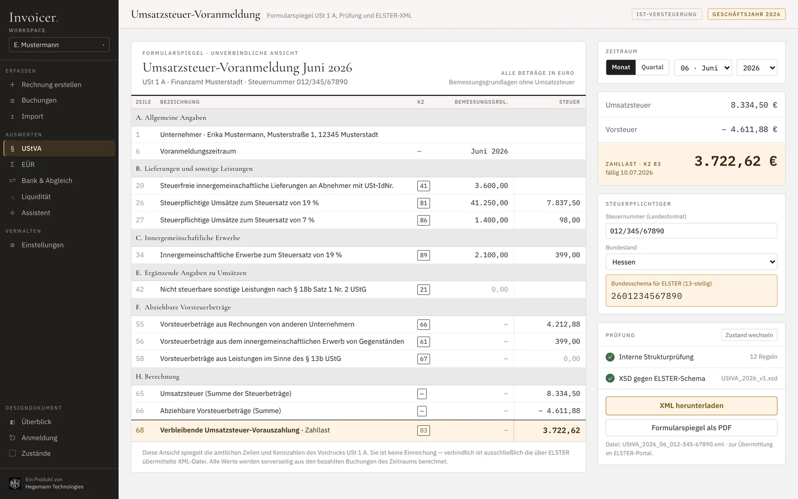
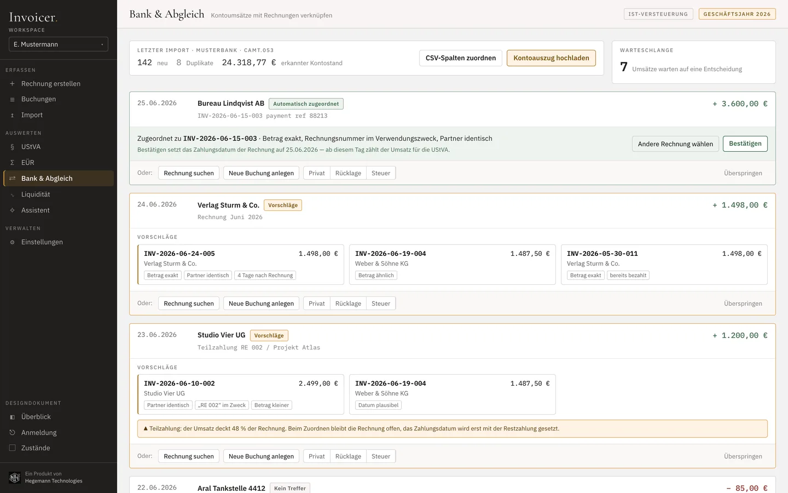
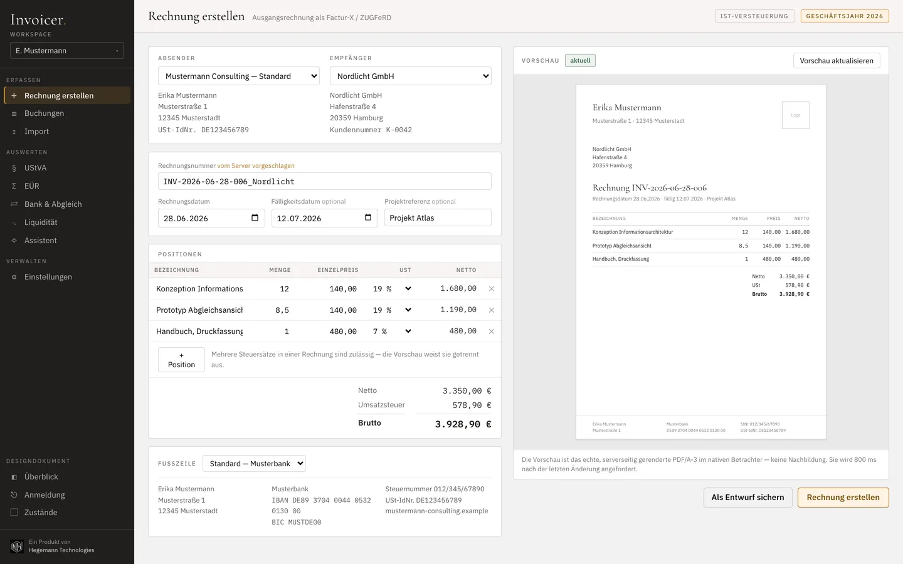
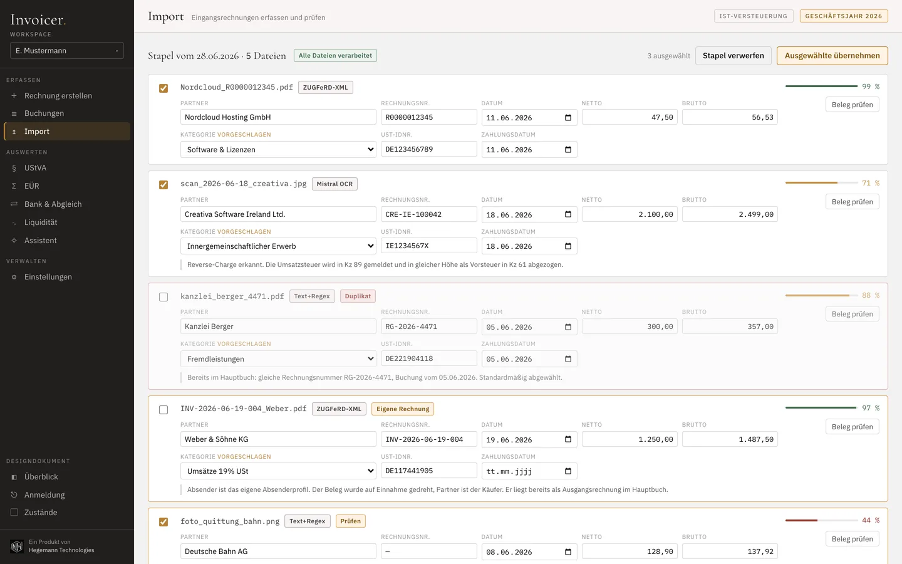

Der Link öffnet einen klickbaren Prototyp der Oberfläche — ohne Installation, ohne Backend. Die Buchhaltung selbst läuft über den Code. 1,4 MB, Desktop empfohlen.
Hinweis für Mobilgeräte: Der Prototyp ist für den Desktop gebaut (1440×900). Auf dem Handy sehen Sie eine verkleinerte, aber vollständige Ansicht — zum Lesen zoomen. Die Screenshots weiter unten zeigen dieselben Bildschirme in voller Größe.
Ihr Browser ist zu alt für den Prototyp.
Er benötigt DecompressionStream (Safari 16.4+, Chrome 80+,
Firefox 113+). Die Screenshots weiter unten zeigen alle Bildschirme.
01. Warum es existiert
Ich bin Einzelunternehmer und versteuere nach Zufluss. Meine Buchhaltung habe ich jahrelang mit Werkzeugen gemacht, die für jemand anderen gebaut wurden — für Kanzleien, für Kapitalgesellschaften, für Soll-Versteuerung. Vieles war entweder zu viel oder an genau der falschen Stelle zu wenig.
Also habe ich mir mein eigenes gebaut. In zwei Tagen stand der bedienbare Entwurf: jeder Bildschirm klickbar, jeder Zustand entschieden, bevor die erste Zeile Produktionscode existierte. Diesen Entwurf können Sie unten öffnen — er ist bis heute die Referenz für die Oberfläche.
Seitdem mache ich meine echte Buchhaltung damit: Rechnungen, Belege, Umsatzsteuer-Voranmeldung, Bankabgleich. Es ist kein Nebenprojekt, das ich einmal gezeigt und dann liegen gelassen habe — es ist das Werkzeug, das ich benutze. Und weil die E-Rechnungspflicht denselben Bedarf bei vielen anderen erzeugt, gebe ich es weiter.
02. Was es kann
- Ausgangsrechnungen als Factur-X/ZUGFeRD — ein PDF, das die Rechnungsdaten maschinenlesbar mitführt. Positionen bearbeiten, Netto/USt/Brutto rechnet live mit, Vorschau baut sich neu auf.
- Belege erfassen in Stufen: eingebettetes ZUGFeRD-XML, dann Text und Regex, dann OCR, dann Modell. Die teure Stufe läuft nur, wenn die günstige nichts findet — und ganz ohne API-Schlüssel läuft es auch, nur mit weniger Automatik.
- Umsatzsteuer-Voranmeldung als Formularspiegel des amtlichen Vordrucks USt 1 A, gegen die ELSTER-Schemata geprüft und als XML exportiert. Die Übermittlung machen Sie selbst im ELSTER-Portal.
- EÜR nach dem Zuflussprinzip, mit den Kategorien, die man als Einzelunternehmer tatsächlich braucht.
- Bankabgleich aus CAMT.053 oder CSV. Jeder Umsatz wird zu einer Entscheidung mit begründeten Vorschlägen, Teilzahlungen werden erkannt, jede Zuordnung ist umkehrbar.
- Liquidität mit Steuerterminkalender und Rücklagen-Deckung — damit die Zahllast nicht überrascht.
- Ein Assistent, der nicht rechnet. Das Modell wählt nur die Abfrage aus einem festen Satz lesender Funktionen. Der Server rechnet. Das Modell formuliert den Satz darum — Zahl, Begründung, Quelle. Eine Buchhaltung, die ihrer eigenen UStVA widerspricht, wäre schlechter als eine ohne Chat.
03. Bildschirme




04. Selbst nutzen
Der Code ist offen und läuft auf Ihrem eigenen Rechner. Es gibt keine gehostete Version, und das ist eine Entscheidung, keine fehlende Funktion: es geht um Steuerdaten. Die gehören auf einen Rechner, den Sie kontrollieren — nicht auf meinen.
Sie brauchen Docker. Der Rest ist eine Konfigurationsdatei. API-Schlüssel für die Belegerkennung sind optional — ohne sie fallen die oberen Erkennungsstufen weg, alles andere funktioniert.
Fragen, Fehler und Verbesserungen gerne als Issue. Ich entwickle es ohnehin weiter, weil ich es selbst benutze.
05. Grenzen
- Keine Steuerberatung. Das Werkzeug rechnet und exportiert, es berät nicht. Was Sie einreichen, verantworten Sie — im Zweifel mit Ihrem Steuerberater.
- Kein Testat, keine Zertifizierung. Es ist mein Werkzeug, das ich offen lege, kein geprüftes Produkt. Wer ein Testat braucht, braucht etwas anderes.
- Für Einzelunternehmer mit Ist-Versteuerung gebaut, inklusive Kleinunternehmerregelung. Soll-Versteuerung, Bilanzierung und Lohnbuchhaltung sind nicht abgedeckt.
- Deutsches Steuerrecht. UStVA, EÜR, ELSTER, Kennzahlen — die Oberfläche ist deutsch, weil die Fachsprache es ist.
- Desktop-first, mit Absicht. Gebaut für 1440×900, nutzbar ab 1024 px. Buchhaltung passiert am Schreibtisch; eine Handy-Ansicht war bewusst nicht Teil des Entwurfs.
- Der Prototyp ist nicht die Anwendung. Er zeigt die Oberfläche, läuft ohne Backend und speichert nichts. Alle Namen, Beträge, Belege und Nummern darin sind erfunden.